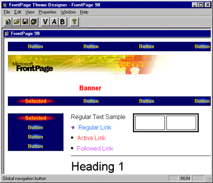

|
| ||
|
| ||
FrontPage 98 ships with over 50 professionally designed themes that can be applied to your Web site using the FrontPage Explorer's Themes view. By design, the appearance and properties of a theme's individual elements cannot be modified in the FrontPage Editor by the user. However, you can easily modify or customize a theme using the FrontPage Theme Designer, a tool that is included on the FrontPage 98 CD-ROM.
To install the Theme Designer, exit the FrontPage Explorer and the FrontPage Editor (if they are running) and run tdsetup.exe from the \SDK\THEMES\DESIGNER folder on the FrontPage 98 CD-ROM or from the free downloadable FrontPage 98 Software Developer's Kit  . After Setup has completed, launch the FrontPage Explorer. To start the Theme Designer, choose the Show Theme Designer command from the FrontPage Explorer's Tools menu.
. After Setup has completed, launch the FrontPage Explorer. To start the Theme Designer, choose the Show Theme Designer command from the FrontPage Explorer's Tools menu.
The Theme Designer setup program tdsetup.exe also installs another utility: the FrontPage Theme Verifier. The program thmveras.exe can be found in the \bin directory under the FrontPage installation directory. This utility can be used to verify that the custom themes you create meet the basic requirements to work well with FrontPage.
The Theme Verifier is most useful if you are going to create themes without the help of the Theme Designer. It analyzes one or more theme directories and creates a report that can be saved and printed.
Designing a New Theme
The easiest way to begin work on a new or customized theme is to open an existing one. From the Theme Designer's File menu, choose Open Theme to select a theme from a list of installed themes (for example, "Network Blitz"). This list matches the installed themes available in the FrontPage Explorer's Themes view. You can also choose the New Theme command, which opens a generic theme that you can then customize with your own graphics and image effects.

Unlike the FrontPage Explorer's Themes view, which only shows partial theme elements, the Theme Designer window shows all of a theme's design elements, including:
|
|
When you mouse over any theme element, the mouse pointer changes into a hand and the element's name is displayed on the status bar. Double-clicking a theme element opens the properties sheet for that element, where you can make changes to its properties, and view a dynamic preview of your changes. You can also right-click a theme element in the inital Theme Designer application window and choose display and property options from the shortcut menu.
Display Options
Using the Theme Designer, you can display and change the appearance of elements when the Vivid Colors, Active Graphics, and Background Image options are selected in the FrontPage Explorer's Themes view. To do this, select the desired combination of the V, A, and B buttons on the toolbar before making changes to an element. You can also select the appropriate display option(s) from the Theme Designer's View menu.
Dynamic Properties
While viewing or changing the properties of a theme element, you can preview the element in its dialog box. Properties tabs that accept input of a file path (for example, the location of an image), you can drag and drop the file over the dialog box and the Theme Designer will fill in the complete path to the file.
Saving a New or Modified Theme
When you have finished creating a new theme or editing an existing one, choose the Save As command on the File menu to save the theme as a new theme, or choose the Save command to overwrite the original theme with your changes. Note that you cannot overwrite the original FrontPage 98 themes that were shipped on your FrontPage 98 CD-ROM. These themes are read only.
If the FrontPage-based Web site you want the new theme applied to was open in the FrontPage Explorer when you edited and saved the theme in the Theme Designer, the changes will be applied automatically. However, if the Web was not open when you saved changes in the Theme Designer, it will be necessary to re-apply the new theme to the FrontPage-based Web site. As with any changes to your FrontPage-based Web site, if your FrontPage-based Web site is published on a remote Web server, you must re-publish the Web before the theme's design changes will be visible to visitors to your site.
Applying Custom Themes
The Theme Designer saves your newly completed or updated theme into the FrontPage 98 installation on your computer where it is available for use by the FrontPage Explorer and FrontPage Editor. However, the Theme Designer will not modify any of your FrontPage-based Web sites. If you are modifying an existing custom theme, your FrontPage-based Web sites using previous versions of that custom theme will remain unchanged.
To use your new or updated custom theme in a FrontPage-based Web site, you must open that FrontPage-based Web site in the Explorer and apply or re-apply the custom theme. If your custom theme is only applied to selected pages instead of the entire Web, you must apply your custom theme to at least one of the pages in the FrontPage-based Web site and then recalculate hyperlinks. Repeat this procedure for all the FrontPage-based Web sites on any workstations or Web servers where you would like to use your custom theme.
Sharing Custom Themes with Other Users
You can easily share your new custom theme or updated custom theme with other FrontPage 98 users. When a FrontPage 98 user opens any FrontPage-based Web site that uses your custom theme, the custom theme or new update is automatically downloaded into the FrontPage 98 installation on that user's computer, provided that the custom theme was not present or merely an older version was available.
If you do not wish to grant a user permission to edit your FrontPage-based Web site, you can create a new FrontPage-based Web site specifically for the purpose of distributing your custom theme. Users that download your custom theme can then use your new or updated custom theme in a FrontPage-based Web site by opening that FrontPage-based Web site in the FrontPage Explorer and applying or re-applying the custom theme.
Note: If your custom theme is only applied to selected pages instead of the entire FrontPage-based Web site, re-apply your custom theme to at least one of the pages in the FrontPage-based Web site and then recalculate hyperlinks. Repeat this procedure for all the FrontPage-based Web sites on any workstations or Web servers where you would like to use the custom theme.
Because the distribution of custom themes occurs automatically, it is important for FrontPage users working together to give their custom themes different names in order to avoid accidental overwriting.
Did you find this material useful? Gripes? Compliments? Suggestions for other articles? Write us!
© 1999 Microsoft Corporation. All rights reserved. Terms of use.